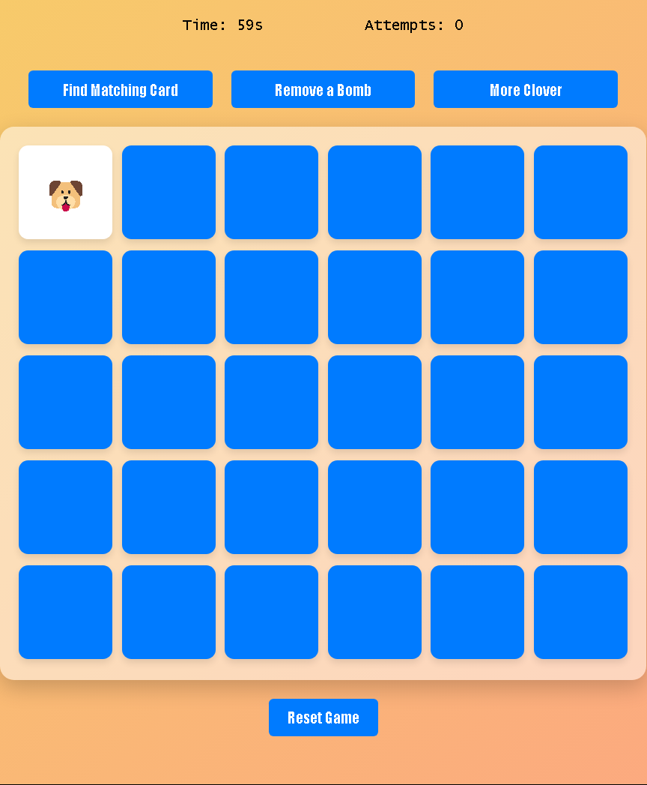
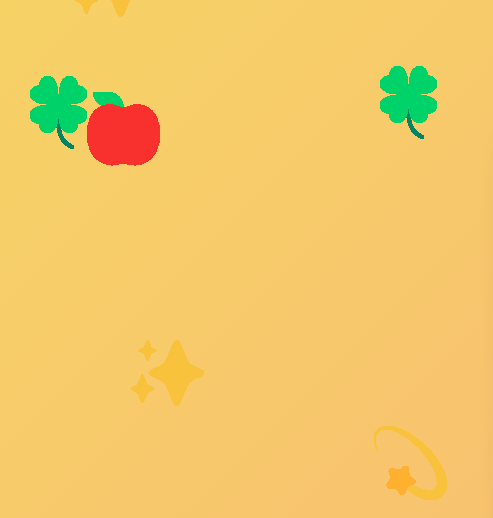
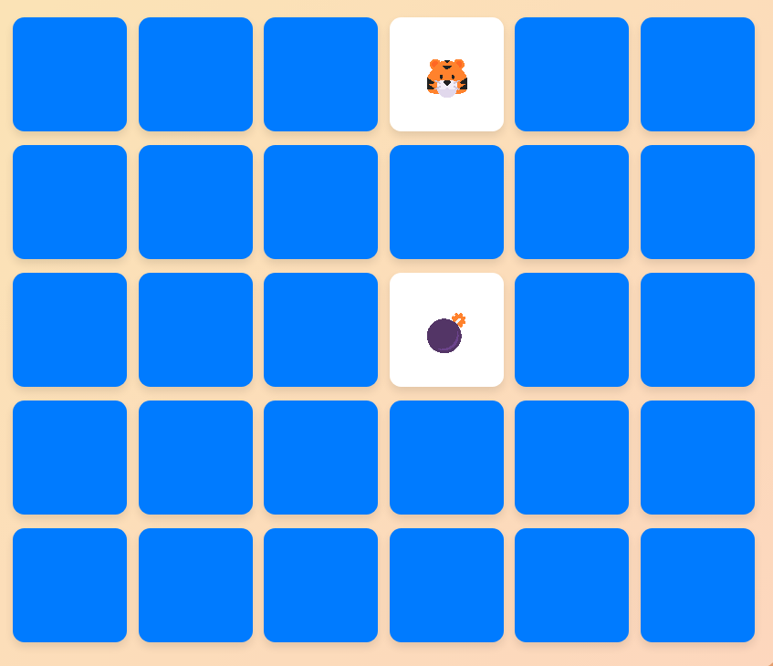
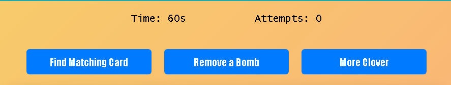

Start the game by clicking any card in the board,
when 2 same cards are flipped, they will disappeared,
if they're not the same they are going to flip back in 1 second.

You can find there's emojis falling both left and right side
Get +5 seconds by clicking the clover.

Be carecul! You will get -10 seconds when filpping the bomb card

You can use these special button! But only one time per game.
"Find Matching Card" Can help you to filp the other card
which is the same as the one you flipped.
"Remove a Bomb" It will randomly remove a bomb in this game
to prevent your time get deducted.
"More Clover" This will increase the drop rate of "Clover"
from 10% to 30% on both side